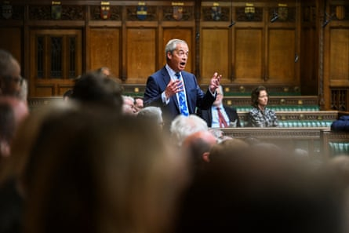

N igel Farage has had one of the best years of his political career after voters finally elected him to parliament at the eighth time of asking. He is odds on to be the UK’s next prime minister, vying with Angela Rayner and Wes Streeting, with Kemi Badenoch trailing behind.
Here are the key facts and numbers behind his first year in the House of Commons.
Topping the polls
Farage has been flying high in the polls, leading the pack in terms of popularity and outstripping Keir Starmer in some areas – although opinion is still divided. One achievement, aided by Starmer, is that the public is now more likely to see Farage as the main opposition rather than Badenoch, according to the pollster Ipsos.
Although many people have no confidence in any party, the pollster found they are more likely to be confident in Reform UK (37%) compared with Labour (32%). Just a quarter (24%) chose the Conservatives.
Missing votes
Farage has taken a relaxed view to being present in the House of Commons, telling a press conference this month that his vote doesn’t make any difference much of the time. “We are stuck in a very funny parliament. Occasionally you’ll get a vote like on assisted dying. Everything else the government wins by 180 to 200,” he said, when quizzed on why he was absent for the debate on decriminalising late-term abortion.
He has voted about 95 times over the course of the year out of about 250 divisions – a similar record to Badenoch, the Conservative party leader, but less than the Lib Dem leader, Ed Davey, or the Green party leaders Adrian Ramsay and Carla Denyer (who had one of the highest voting records at 209).
Speaking in the house
Nigel Farage speaking during a session in the House of Commons.Photograph: House of Commons/AFP/Getty Images
Data compiled by campaign group Hope Not Hate found that Farage had also spoken less in parliament than other comparable party leaders – just 45 times, against 226 for Badenoch (who has more opportunities as leader of the opposition), 97 for Davey and 182 and 86 respectively for Denyer and Ramsay.
Visibility
Farage is one of the most vocal and prominent party leaders on broadcast channels. He recorded dozens of episodes of his midweek 7pm GB News show and had prime time appearances on Question Time, Laura Kuenssberg on Sunday, ITV This Morning and ITV’s Peston.
One of the main ways in which Farage has outstripped the other party leaders is on social media. He has 2.2 million followers on X – more than the prime minister who has 1.9 million. On TikTok he has 1.3 million followers, reaching a younger audience, whereas few other politicians even have accounts – partly for security reasons.
Money
Farage is the highest paid MP of this parliament by a long way. He earned at least £970,000 from outside employment ranging from speeches to bringing in £280,000 as brand ambassador for a gold company. In April, he got a 10th job, making £25,000 (AU$52,000) as a commentator for the Rupert Murdoch-backed Sky News Australia, with the MP telling the channel that Britain was “going downhill”.
The portfolio of gigs on top of his role as an MP also includes a £4,000-a-month column for the Daily Telegraph and presenting for GB News, which has paid him more than £330,000 since July.
Trips abroad
Nigel Farage attends a rally in Pennsylvania, US.Photograph: Will Oliver/EPA
Farage has made at least nine trips abroad, including eight to the US, since he was elected MP for Clacton in Essex last July, with many of them either funded by donors or undertaken for paid employment such as speeches. These include fundraisers for Donald Trump and the Republican party, celebrating Trump’s inauguration, and a visit to meet Elon Musk – which preceded the fall out between the pair over Farage’s decision to distance Reform from far-right agitator Tommy Robinson. Domestically, he has found time for trips to Ascot and Cheltenham to watch horse racing while the Commons was sitting. And he also took a week-long break in May to an unknown location during parliament term time.
Clacton
Farage has embedded himself quickly as MP for Clacton and is there many Fridays doing events. However, he has said he is not doing surgeries for safety reasons – although he had to backtrack on a claim that he was advised not to by parliamentary security advisers. He has also not been turning up to the Clacton town board despite being invited. A Clacton Labour spokesperson said: “Nigel Farage claimed he cared – that he’d put Clacton on the map. Yet while we face real challenges here, he’s been jetting off around the world, leaving our voices unheard. He’s here so little, he probably needs that map.”